Documentacion de ferias — Tecnologia e Innovacion · Moda y Diseno
Bienvenido al sitio de documentacion de dos eventos realizados en Bogota durante el 2026. Selecciona por cual feria deseas comenzar.
Registrar las conferencias y talleres para consulta academica futura.
Presentar todo el contenido en espanol e ingles.
Construir un vocabulario tecnico con mas de 30 terminos.
Analizar el impacto etico y social de la tecnologia y la moda.
Feria de Tecnologia e Innovacion — Bogota 2026
En la feria de tecnología pudimos ver los avances tecnologicos que han venido creciendo en la nación, el desarrollo del software, hardware, creacion de inteligencia artificial, analisis de UI/UX en diferentes programas, asistimos a la conferencia de Andrés Pisso, un diseñador de UI, nos enseño conceptos basicos de figma y como crear objetos dentro de este mismo para utilizar tanto en aplicaciones como en videojuegos
At the technology fair, we got to see the technological advances that have been growing in the country, the development of software, hardware, creation of artificial intelligence, analysis of UI/UX in different programs. We attended the conference by Andrés Pisso, a UI designer, who taught us basic concepts of Figma and how to create objects within it to use both in apps and video games.
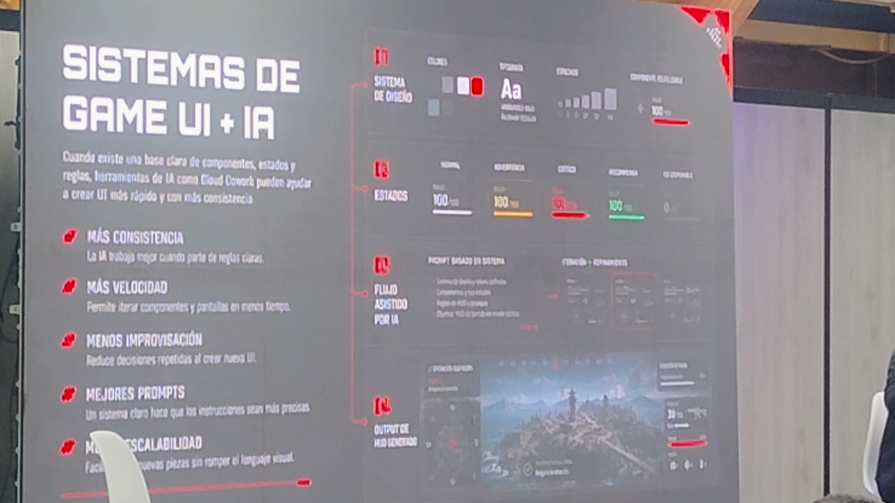
Feria de Moda y Diseno Textil — Corferias, Bogota
En la feria de Createx pudimos observar el talento de las personas en el area de la confección, marroquinería, entre otras areas, las aprendices de nuestro centro (CMTC) dieron un grán esfuerzo y empeño en demostrar que tienen talento para crear prendas y modelarlas de forma profesional, tambien cabe mencionar a los directivos del Sena que permitieron la gestión del evento y la participación de nuestro centro en el, dando un impulso no solo al centro de manufactura en textil y cuero sino a todo el nombre del Sena como tal
At the Createx fair, we were able to see the talent of people in the areas of clothing, leather goods, and other fields. The apprentices from our center (CMTC) put in a lot of effort and dedication to show that they have the talent to create garments and model them professionally. It's also worth mentioning the SENA directors who made the management of the event and our center's participation possible, giving a boost not just to the textile and leather manufacturing center but to the entire SENA name as well.
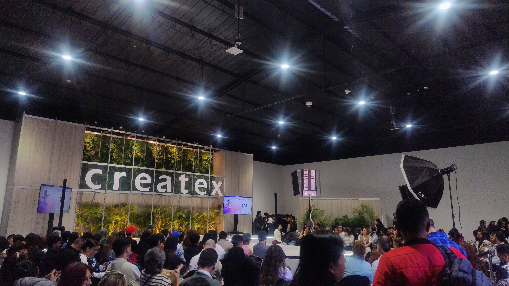
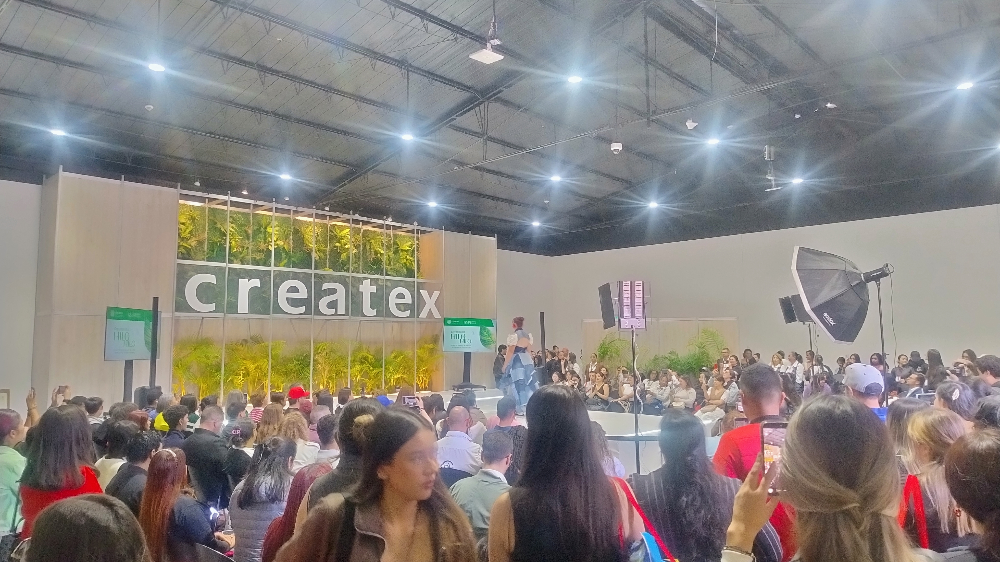
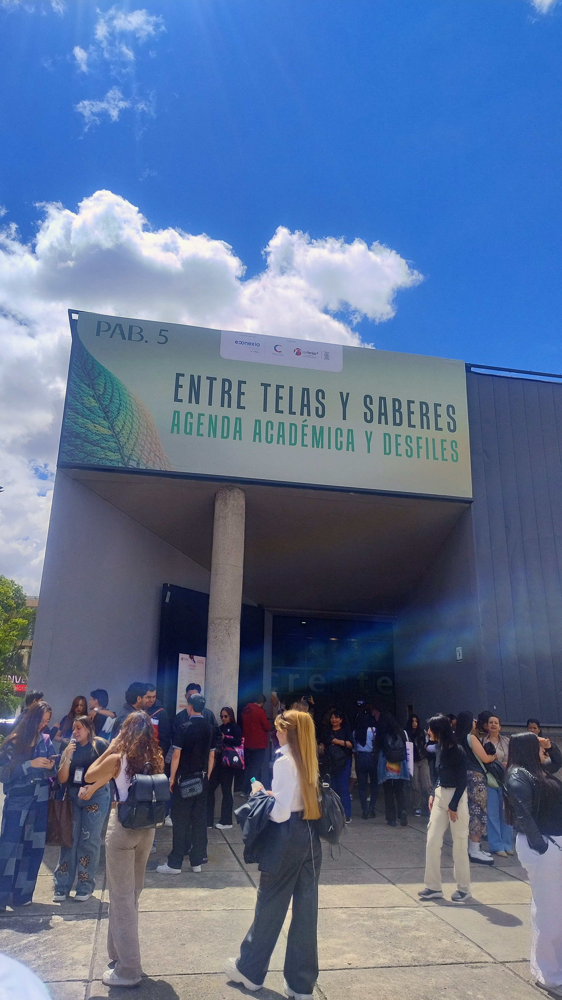
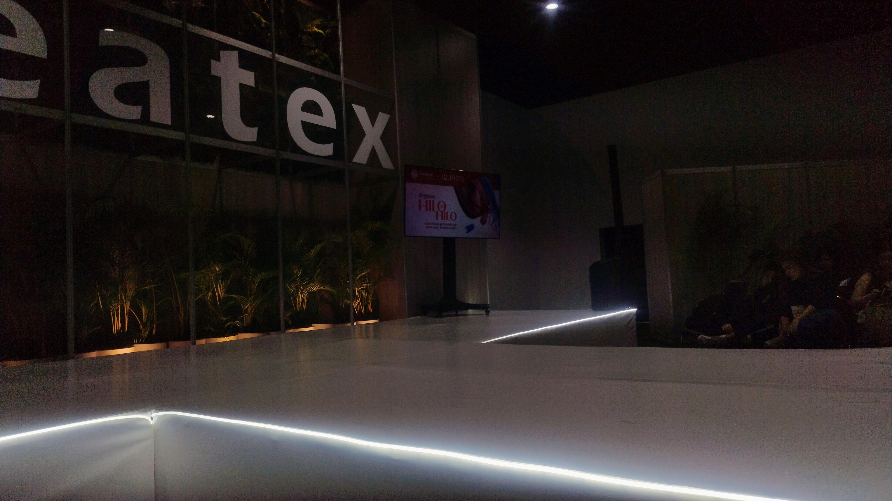
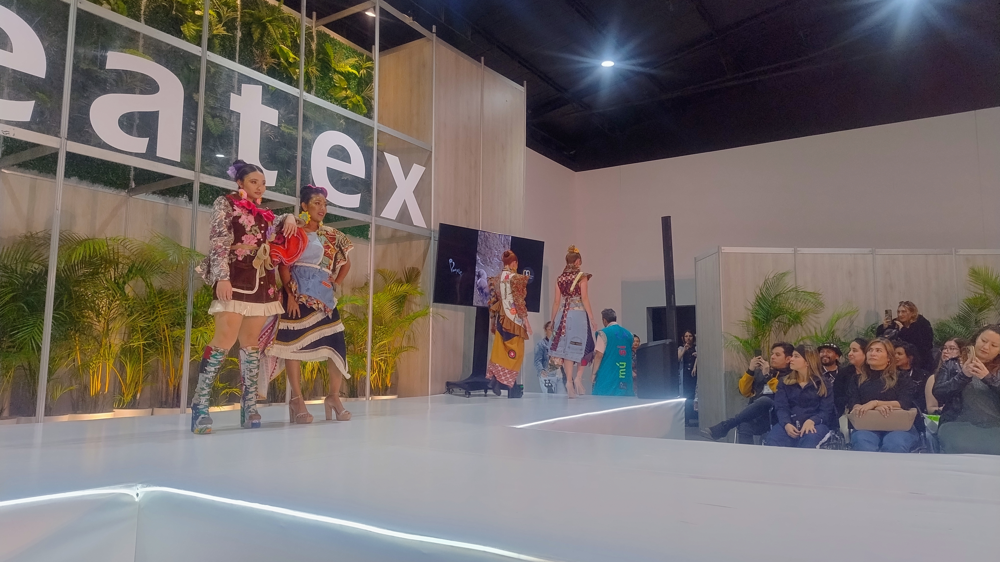
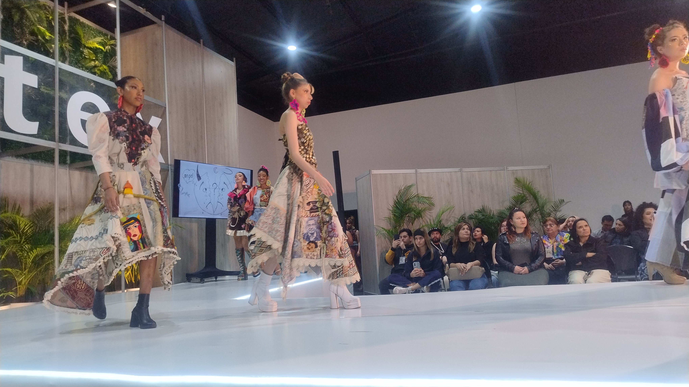
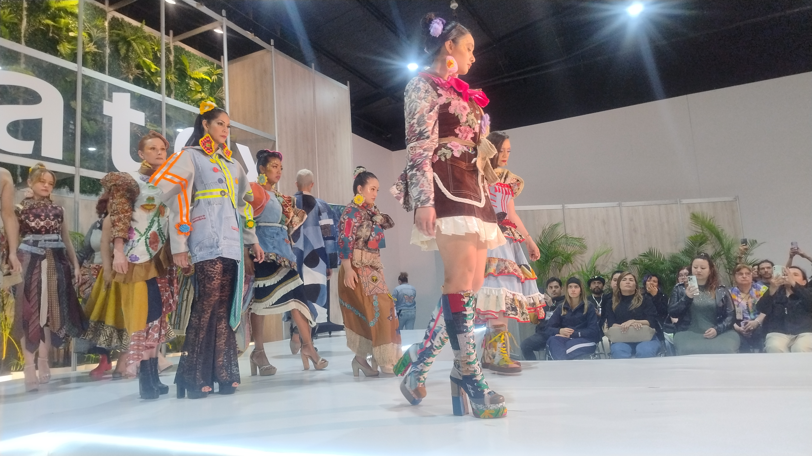
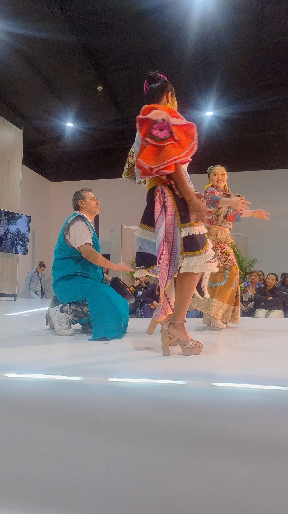
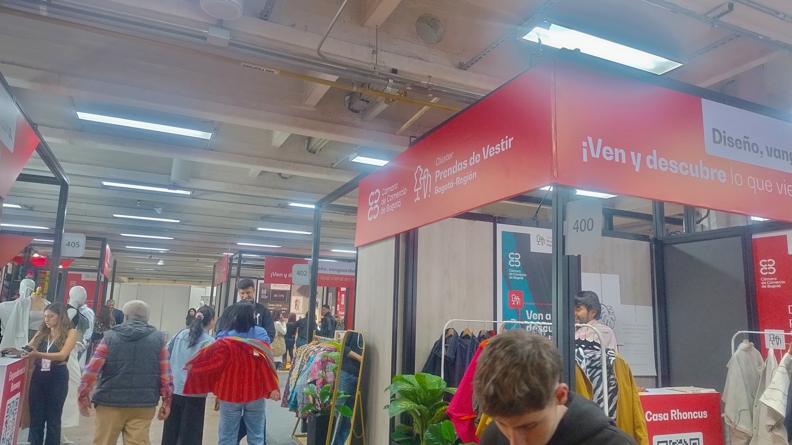
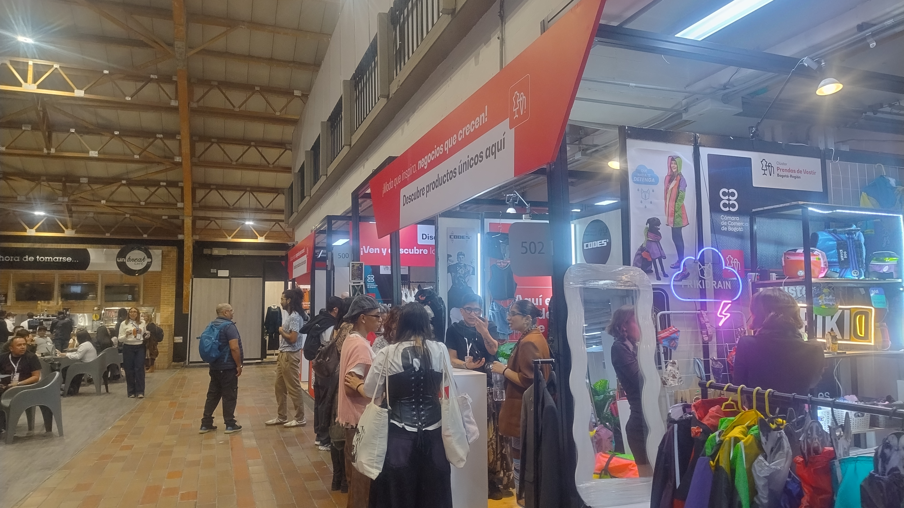
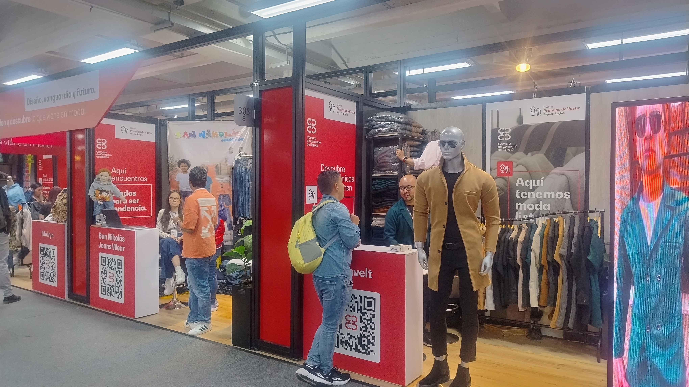
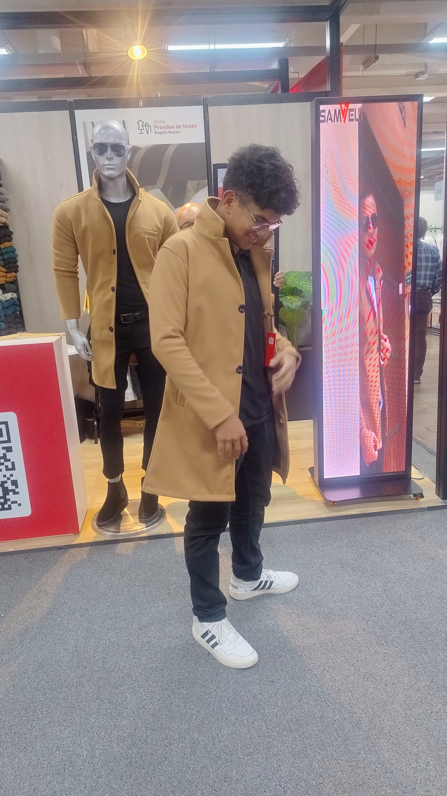
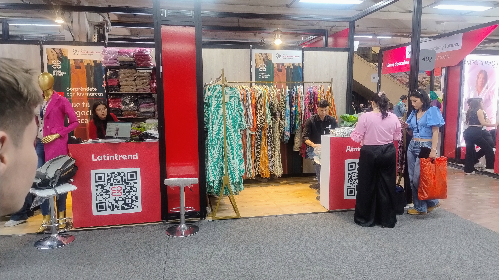
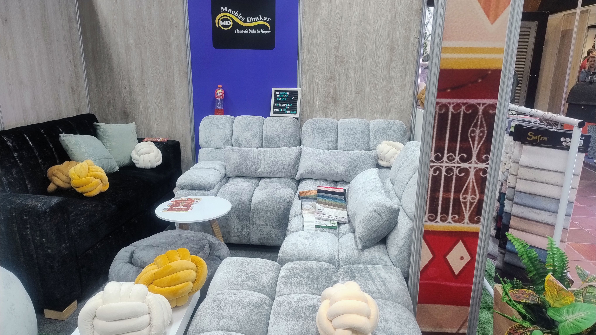
Terminos tecnicos aprendidos en Colombia 5.0 y Createx
Reflexion etica y personal sobre las dos ferias
En resumen Colombia 5.0 fué bastante informativa ya que pudimos entender como funciona el crecimiento tecnologico hoy en dia y como nosotros como desarrolladores podemos aportar en este crecimiento y ser parte del futuro
En lo personal pude ver que el mundo de la moda es muchisimo mas amplio del o que creía, el diseño de prendas de vestir, el modelaje, la combinación de colores en todas las cosas son simplemente maravillosas, es un area en la que se requiere pasión y creatividad para sacarlo adelante
Tenemos la IA como una herramienta, pero no puede reemplazarnos a nivel de creatividad o responsabilidad, sin embargo es de gran ayuda en muchos momentos
Es bueno tener en cuenta nuestro nivel de conciencia al momento de usar internet y entregar nuestros datos a terceros
Es necesario aprender de automatización para hacer procesos mas eficientes y tener mayor espacio para diferentes trabajos o actividades
Con respecto al uso de la tecnologia se ha visto el impacto positivo en la humanidad y se ve que aún falta mucho por descubrir, pero siempre siguiendo la etica y la moral al momento de emplearla
Como desarrolladores somos responsables de manejar la tecnologia, los datos, la IA etc.. de forma ética y responsable
Es importante tener en cuenta la reducción de residuos innecesarios al momento de generar un producto
Tanto en tecnología como en moda se puede reutilizar el material empleado en algún producto, esto con el fin de evitar la contaminación excesiva e innecesaria
Como se ha dicho anteriormente, el usar los productos de forma conciente y responsable no solo traerá mas eficiencia sino que la creacion de diferentes productos será mas optima
Cuando somos desarrolladores tenemos acceso a un amplio mundo de materiales y/o recursos para llevar a cabo nuestro trabajo, sin embargo debemos concientizarnos de cuanto debemos usar y de no caer en un derroche compulsivo de materiales
Gracias a la tecnologia se han visto avances en el medio ambiente, reducción de contaminación, adquirir conocimiento sobre como debemos cuidar el medio ambiente, la tecnología ha dado paso a una era en la que muchas personas puedan aportar al cuidado del medio ambiente y promover buenos actos para cuidarlo
El exito se encuentra mas alla de las dolencias o de los altibajos de la vida, hay exito para aquellos que perseveran a pesar de todo, las personas que asistiéron a estos eventos me desmotraron el esfuerzo que pusierón y la dedicación tambien